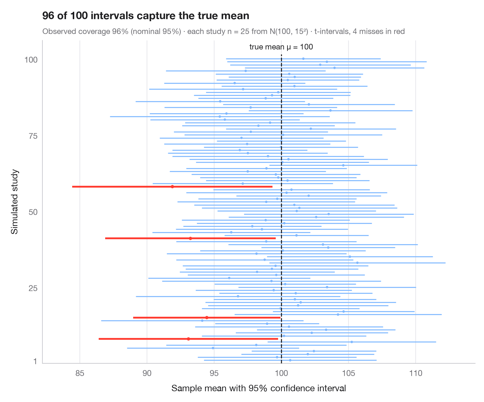

95% 置信区间的含义
从 944 名 ANES 受访者中抽取 30 人，重复调查 100 次；未覆盖真值的平均年龄 95% 置信区间以红色显示。

“95% 置信”是方法的性质，而不是某一个区间的性质。这里把 1996 年美国全国选举研究（statsmodels anes96）的 944 名受访者视为整个总体，因此他们的平均年龄就是已知的真值。同样的小型调查——随机、不放回地抽取 30 名受访者——重复 100 次，每条水平线是围绕样本平均年龄得到的 95% t 区间。其中约 95 个区间覆盖真实均值（虚线）；未覆盖的少数几个以红色绘制。区间宽度也各不相同，因为每个样本都要估计自己的标准差。
抽样使用固定种子的 numpy，区间由 scipy.stats.t.interval 计算。年龄分布右偏（19 至 91 岁），仅凭偶然，一轮 100 次调查的覆盖率就可能比 95% 高出或低出几个百分点。
代码及图中文字均为英文。
import matplotlib.pyplot as plt
import numpy as np
import statsmodels.api as sm
from scipy import stats
# Population: ages of the 944 ANES 1996 respondents; 100 surveys of n = 30 each
age = sm.datasets.anes96.load_pandas().data["age"].to_numpy()
rng = np.random.default_rng(2024)
mu, n, reps = age.mean(), 30, 100
samples = np.array([rng.choice(age, n, replace=False) for _ in range(reps)])
means = samples.mean(axis=1)
se = samples.std(axis=1, ddof=1) / np.sqrt(n)
lo, hi = stats.t.interval(0.95, df=n - 1, loc=means, scale=se)
miss = (lo > mu) | (hi < mu)
fig, ax = plt.subplots(figsize=(8, 6.6))
y = np.arange(1, reps + 1)
colors = np.where(miss, "#FF3B30", "#7FB8FF")
ax.hlines(y, lo, hi, color=colors, lw=np.where(miss, 2.2, 1.2))
ax.scatter(means, y, s=np.where(miss, 16, 9), color=colors, zorder=3, lw=0)
ax.vlines(mu, 0, reps + 1.5, color="#1D1D1F", ls="--", lw=1.2, zorder=4)
ax.text(mu, reps + 2.5, f"population mean age μ = {mu:.1f}", ha="center", va="bottom", fontsize=9.5,
color="#1D1D1F")
ax.set_ylim(0, reps + 6)
ax.set_yticks([1, 25, 50, 75, 100])
ax.set_ylabel("Survey (random sample)")
ax.set_xlabel("Mean age with 95% confidence interval (years)")
ax.grid(axis="y", visible=False); ax.grid(axis="x")
ax.margins(x=0.08)
ax.set_title(f"{reps - miss.sum()} of {reps} surveys' intervals capture the true mean age", pad=26)
ax.text(0, 1.02, f"Observed coverage {100 * (1 - miss.mean()):.0f}% (nominal 95%) · "
f"each survey n = {n} of {len(age)} ANES 1996 respondents · t-intervals, {miss.sum()} misses in red",
transform=ax.transAxes, fontsize=9.5, color="#6E6E73")
plt.show()
图表使用了可选的 PyStatlas 样式：添加 plt.style.use("pystatlas.mplstyle") 即可完全还原其外观。
数据来源
- American National Election Study, 1996. Rosenstone, S. J., Kinder, D. R., Miller, W. E., & the National Election Studies. (2016). ANES 1996 Time Series Study (ICPSR 6896; Version 6) [Data set]. Inter-university Consortium for Political and Social Research. https://doi.org/10.3886/ICPSR06896.v6
Subset of 944 respondents distributed with statsmodels (sm.datasets.anes96); public domain.
这些示例用于说明统计方法。图表标题描述的是该图在这些特定数据中呈现的内容——这些数据往往样本较小、年代较早或并不完整——而不是作者对实质问题的立场。关于解释、背景和数据质量，请以此处引用的原始来源为准。
如何引用
PyStatlas 由 Thierry Warin 创建并维护。如果它对你的工作有所帮助，敬请引用。
Warin, T. (2026). What a 95% confidence interval means. In PyStatlas: The Python Gallery of Statistical Graphics for the Social Sciences. https://warint.github.io/pystatlas/inference-uncertainty/confidence-intervals/
@misc{warin2026statlas,
author = {Warin, Thierry},
title = {PyStatlas: The Python Gallery of Statistical Graphics for the Social Sciences},
year = {2026},
howpublished = {\url{https://warint.github.io/pystatlas/}},
note = {Source code: https://github.com/warint/pystatlas}
}